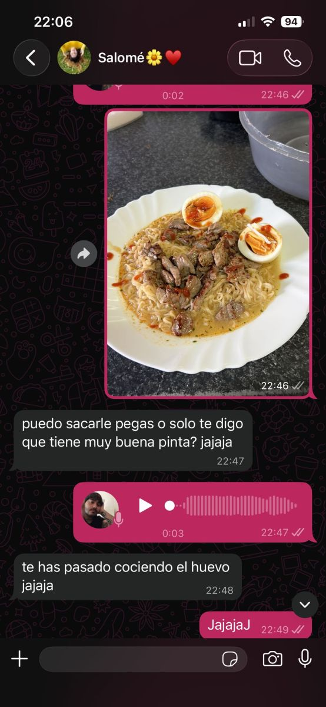

31/3. Nuestra primera conversación por WA
Lo primero que tenemos aquí registrado es el consejo culinario.
He mejorado haciéndolos, he de admitir.
No sabía que estaba hablando con una experta en la materia.
La verdad que la foto del ramen es horrorosa jajaj.
